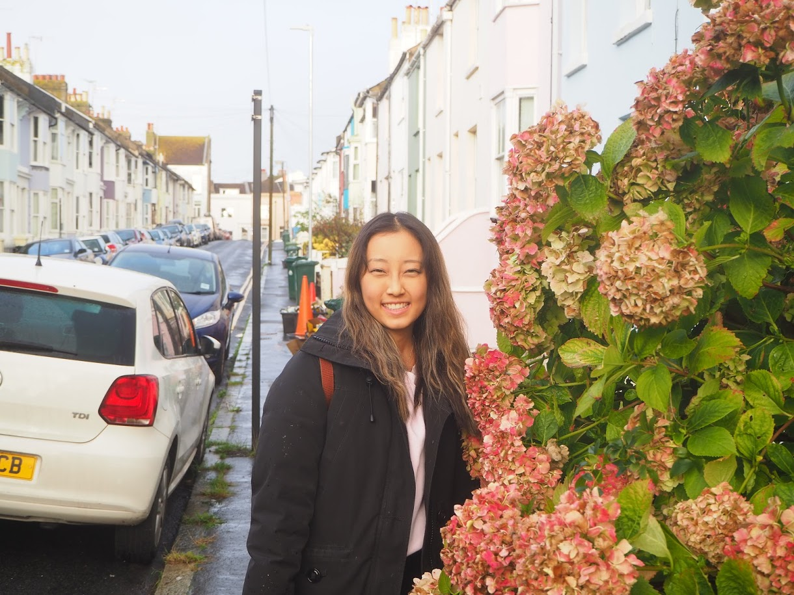

Claire Yu
Welcome to my page!
Skills
TeamworkAbout me
Hi everyone, welcome to my website! This is a place for me to share my experiences, photos, and other aspects of my life with you!
Experiences
Education
University of Toronto (Class of 2018),
Bachelor of Commerce
 London School of Economics and Political Science (in progress)
London School of Economics and Political Science (in progress)
Msc Marketing
Work Experience
- ARMDNOW (Summer 2015/2016) -worked in client services, dealing with medical accounts receivables factoring
- Rotman School of Management (Sept 2017-April 2018) -led participants in research marketing/psychology research studies -collected and recorded data
-called insurance companies to help clients receive their insurance payments
-Communicated with insurance companies regarding payment, verification and appealing insurance claims through mail and fax (for small clinics and rehab centers). Made approximately 80 calls over 2 month period each summer.
-Trained employees in China on customer services and communication with insurance companies.
-Created and organized clients’ information (phone number, fax number, address, etc.) in excel files to be easily accessed by employees
-Reconciled client insurance payments – collected approx. $5000 in payments
-Set up before and clean up after studies
-Learned about research on lay beliefs, goals and priming, beauty and aesthetics, pleasure and pain
-Presented aspects of study on beauty and aesthetics to lab team
-Interacting with other researchers and the lead Professor weekly
Volunteering
- Northfield Medical Clinic (Jan 2019-Aug 2019) -Greeted and registered patients
- RogersTV (Feb 2019-Aug 2019) -Worked in floor director, communicating between filming area and producer
-Assisted in daily admin activities (eg. mail, faxing)
-Greeted guests for weekly talk show